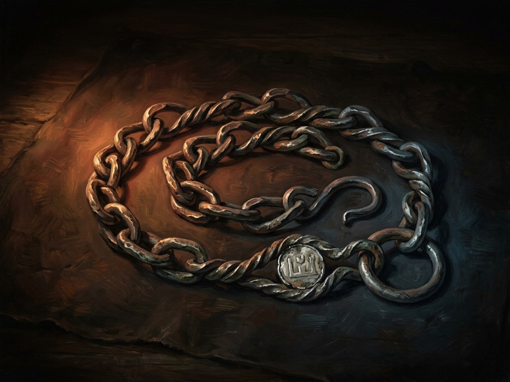

Auksinė grandinė (the strangling chain)¶
Description¶
A heavy chain of Riga gold, each link perfectly welded and colder than the last. At the clasp is a small mark: two crossed keys under a cross, the sign of Riga (Book I ch. 1). It is warm when someone wears it.
Auksinė grandinė (the strangling chain)

Auksinė grandinė (the strangling chain) · artifact¶
Type |
artifact |
Years |
made 1382 |
Note |
Henė’s strangling gold chain; symbol of debt, bondage, and deceit. |
Power¶
It carries the Breath of the Void. It strangles its victim without a mark and afterwards lets its wearer hear the dead man’s last breath. In Book V it lets Žygimantas hear Kęstutis breathe “and know that he is not alone” (V ch. 22). It also muffles sound around the wearer, which is Henė’s signature (Power systems §5).
Rule & cost¶
A Henė-bargain object, always kept to the letter. It does not “exhale” until it has been in the room where the dead man died (V ch. 19). Masses said over it wash the wearer, not the gold (IV ch. 20). The wearer slowly stops sleeping.
Origin¶
[The saga’s invention] Sent from Riga as Jogaila’s “gift” with Hanulas’s envoys, summer 1382 (Book I ch. 1); Henė made it for the cousins’ deal.
Arc across the books¶
Jogaila’s envoys, then the mercenaries, 1382. Kęstutis weighs it and puts it back (I ch. 1). It is fitted round his neck in the Krėva cell on 15 Aug 1382 (I ch. 9). Graph: Jogaila 1382.
Skirgaila, 1383-1397. Graph holder; the books show Henė on the scene.
Henė, Jan 1397. He pockets it after Skirgaila dies at Kyiv (Book II ch. 16) and wears it openly in 1405 (Book III).
Baltramiejus Rogala, Apr 1429-Aug 1430. Given in a Buda corridor as a “gift, not a bribe” (IV ch. 20); worn silent at the Noteć ford (IV ch. 23). Graph: Rogala 1429-1430. It stays with the bishop’s people at Kraków and is eight years in the cathedral treasury (V ch. 19).
Žygimantas Kęstutaitis, 14-15 Aug 1438-20 Mar 1440. Henė fetches it, stoneless, to the Krėva cell and Žygimantas puts it on (V ch. 19). It turns to dust at his murder at Trakai (V ch. 22). It passes from Henė (1397-1429, to Rogala in April 1429) to the Kraków treasury (1430-1438), then to Henė again in 1438 and to Žygimantas (1438-1440).
Relations
Created by: Šešėlių Pardavėjas / Henė
Held by: Baltramiejus Rogala (Oleśnicki’s envoy) (1429–1430) — Wears it on Oleśnicki’s orders; “has not yet learned to exhale”. · Jogaila (1382–1382) — Sent as a ‘gift’ with the envoys (plant in ch.1). · Kingdom of Poland (Lesser Poland lords) (1430–1438) — Remains in Kraków with the bishop’s people (the treasury). · Skirgaila (1383–1397) · Šešėlių Pardavėjas / Henė (1397–1429) — Reclaimed at Skirgaila’s death; gives it to Rogala in Apr 1429. · Šešėlių Pardavėjas / Henė (1438–1438) — Returned to Henė c. 1438 (Book V ch. 19). · Žygimantas Kęstutaitis (1438–1440) — Henė passes it to Žygimantas.
Bearing The wearer slowly stops sleeping. It does not exhale until it has been in the room where the dead man died
Holders Jogaila (sent as a gift with Hanulas's envoys, summer 1382) → Skirgaila 1383 to 11 Jan 1397 → Henė 1397 to Apr 1429 → Baltramiejus Rogala 1429-30 → Kraków treasury 1430-38 → Henė Aug 1438 → Žygimantas Kęstutaitis to 20 Mar 1440
Power Carries the Breath of the Void. Strangles without a mark, then lets its wearer hear the dead man's last breath. Muffles sound around the wearer, Henė's signature
Rule & cost A Henė-bargain object, kept to the letter. Masses said over it wash the wearer, not the gold
Appearance. A heavy chain of Riga gold, each link perfectly welded and colder than the last. At the clasp a small mark: two crossed keys under a cross, the sign of Riga. It is warm when worn.
The murder. Fitted round Kęstutis's neck in the Krėva cell on 15 Aug 1382 (Book I ch. 9).
Sleeplessness. The wearer slowly stops sleeping. Rogala wears it silent at the Noteć ford, and the chain has not yet learned to exhale (Book IV ch. 20, 23).
The dead man's breath. It lets Žygimantas hear Kęstutis breathe, and know he is not alone (Book V ch. 22).
Dust. Henė fetches it, stoneless, to the Krėva cell on 14-15 Aug 1438 and Žygimantas puts it on. It turns to dust at his murder at Trakai, 20 Mar 1440 (Book V ch. 19, 22).
Connections¶
graph LR
golden_chain["Auksinė grandinė (the strangling chain)"]
jogaila["Jogaila"]
poland["Kingdom of Poland (Lesser Poland lords)"]
rogala["Baltramiejus Rogala (Oleśnicki's envoy)"]
shadow_seller["Šešėlių Pardavėjas / Henė"]
skirgaila["Skirgaila"]
zygimantas["Žygimantas Kęstutaitis"]
golden_chain -->|Created by| shadow_seller
jogaila -->|Holds| golden_chain
skirgaila -->|Holds| golden_chain
shadow_seller -->|Holds| golden_chain
rogala -->|Holds| golden_chain
poland -->|Holds| golden_chain
shadow_seller -->|Holds| golden_chain
zygimantas -->|Holds| golden_chain
style golden_chain stroke-width:3px